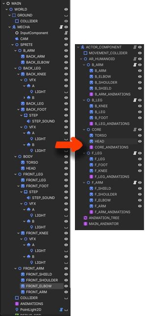

Development -> Animation
Procedural Animation

As the mech units are too big—mainly their sprites,
it is a bit hard to draw each frame on a walk animation.
But the main reason to work with this type of composed animation
is its procedural capabilities.
There was a good, simple tutorial on Youtube about
walking around and having the character's gun point towards
the mouse position. The idea is similar.
Instead of wondering when the player is about to shoot, or
penalising him (and stopping the unit to attack), just
because the resulting animation is too much work seems
backwards.
Of course a lot of transitions will be needed in a sprite with this
size. It would look choppy otherwise—well, more work to do!